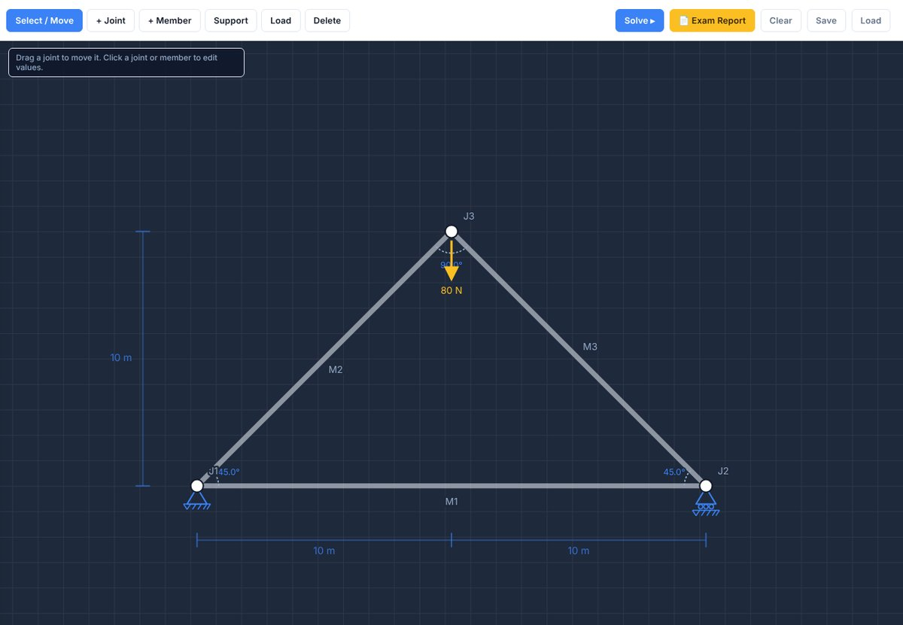
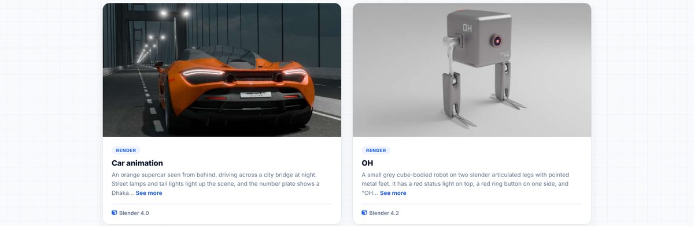
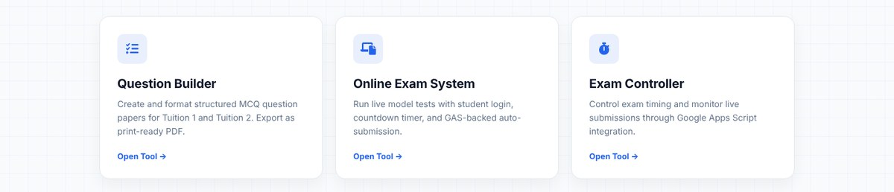

Civil engineering student & tool builder
Md. Shaikh Alam
I build small, useful tools for study and engineering workflows — academic document utilities, live exam systems and a Google-Drive-backed research hub. Outside of that, I model and animate in Blender.
Featured Work
Four sections, each a real tool people actually use — not just mockups.

Civil Engineering Section
Cover page maker, lab index generator and a real-time truss analyzer & solver — built for FEC Batch 10 coursework.

3D Modeling & Animation
Blender renders, rigging and short animations — from hard-surface sci-fi props to stylised characters.

Academy Hub
Question Builder, a live online exam system with timers, and a student portal — used to run real tuition batches.
Research Hub
A private team workspace synced to Google Drive, with its own sign-up → admin-approval flow and a live file browser.
Under the hood
Tools & tech
What these sections are actually built with.
Approach
Practical tools, not just a portfolio.
I focus on practical tools: civil engineering templates that cut repetitive formatting, exam and student tools for the Academy, and web pages that work well on any device.
- Academic document tools that output submission-ready PDFs fast.
- Online exam and student-portal tools built for FEC tuition batches.
- Blender 3D modeling for learning and visual project work.

Engineering background
Academic tools are built around Faridpur Engineering College's format and requirements — especially civil engineering reports, indexes, and printable documents.
Contact
For feedback or collaboration, reach me here.